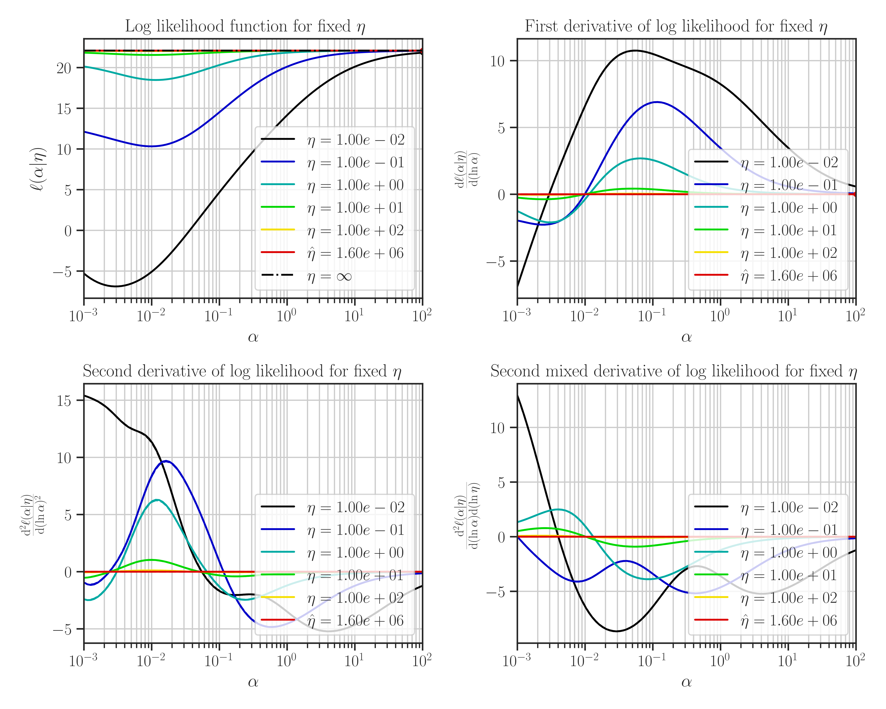
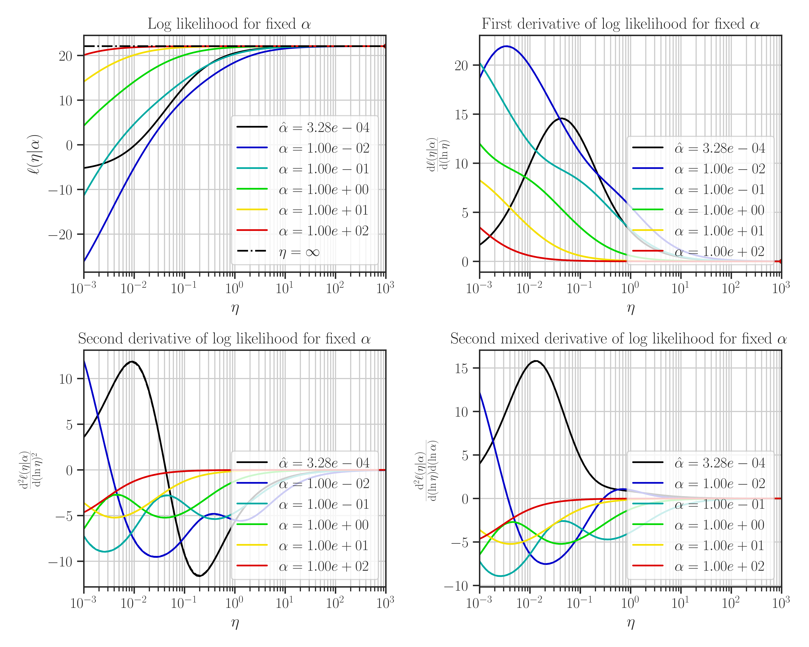

glearn.GaussianProcess.plot_likelihood#
- GaussianProcess.plot_likelihood(z=None, profile_hyperparam='var')#
Plot the likelihood function and its derivatives with respect to the hyperparameters.
- Parameters:
- znumpy.array
An array of the size \(n\) representing the training data. If z is not provided (set to None), the training data that used to define the
glearn.GaussianProcessclass is used.- profile_hyperparam{‘none’, ‘var’, ‘var_noise’}, default: ‘var’
The type of likelihood profiling method to be used in optimization of the likelihood function.
When
profile_likelihoodis set tonone, the likelihood function explicitly depends on the two hyperparameters \(\sigma\) and \(\varsigma\).When
profile_likelihoodis set tovar, the likelihood function depends on the two hyperparameters \(\eta=\varsigma^2/\sigma^2\), which is profiles over the hyperparameter \(\sigma\), reducing the number of the hyperparameters by one.When
profile_likelihoodis set tovar_sigma, the likelihood function is profiles over both \(\sigma\) and \(\eta\), reducing the number of unknown hyperparameters by two.
Notes
This function plots likelihood function and its first and second derivatives with respect to the hyperparameters. The type of hyperparameters depend on the profiling method which is set by
profile_hyperparam.This function is only used for testing purposes, and can only plot 1D and 2D data.
Warning
This function may take a long time, and is only used for testing purposes on small datasets.
Note that the maximum points of the likelihood plots may not correspond to the optimal values of the hyperparameters. This is because the hyperparameters are found by the maximum points of the posterior function. If the prior for the scale hyperparameter is the uniform distribution, then the likelihood and the posterior functions are them same and the maxima of the likelihood function in the plots correspond to the optimal hyperparameters.
Examples
To define a Gaussian process object \(\mathcal{GP}(\mu, \Sigma)\), first, an object for the linear model where \(\mu\) and an object for the covariance model \(\Sigma\) should be created as follows.
1. Generate Sample Training Data:
>>> import glearn >>> from glearn import sample_data >>> # Generate a set of training points >>> x = sample_data.generate_points( ... num_points=30, dimension=1, grid=False,a=0.4, b=0.6, ... contrast=0.9, seed=42) >>> # Generate noise sample data on the training points >>> y_noisy = glearn.sample_data.generate_data( ... x, noise_magnitude=0.1)
2. Create Linear Model:
Create an object for \(\mu\) function using
glearn.LinearModelclass. On training points, the mean function is represented by the array\[\boldsymbol{\mu} = \boldsymbol{\phi}^{\intercal} (\boldsymbol{x}) \boldsymbol{\beta}.\]>>> # Create mean object using glearn. >>> mean = glearn.LinearModel(x, polynomial_degree=2)
3. Create Covariance Object:
Create the covariance model using
glearn.Covarianceclass. On the training points, the covariance function is represented by the matrix\[\boldsymbol{\Sigma}(\sigma, \varsigma, \boldsymbol{\alpha}) = \sigma^2 \mathbf{K}(\boldsymbol{\alpha}) + \varsigma^2 \mathbf{I}.\]>>> # Define a Cauchy prior for scale hyperparameter >>> scale = glearn.priors.Cauchy() >>> # Create a covariance object >>> cov = glearn.Covariance(x, scale=scale)
4. Create Gaussian Process Object:
Putting all together, we can create an object for \(\mathcal{GP} (\mu, \Sigma)\) as follows:
>>> # Gaussian process object >>> gp = glearn.GaussianProcess(mean, cov)
5. Train The Model:
Train the model to find the regression parameter \(\boldsymbol{\beta}\) and the hyperparameters \(\sigma\), \(\varsigma\), and \(\boldsymbol{\alpha}\).
>>> # Train >>> result = gp.train( ... y_noisy, profile_hyperparam='var', log_hyperparam=True, ... hyperparam_guess=None, optimization_method='Newton-CG', ... tol=1e-2, max_iter=1000, use_rel_error=True, ... imate_options={'method': 'cholesky'}, verbose=True)
Plotting:
After the training when the hyperparameters were tuned, plot the likelihood function as follows:
 >>> # Plot likelihood function and its derivatives >>> gp.plot_likelihood()

If we set
profile_likelihood=none, the followings will be plotted instead:


{kind=link}
{kind=link}